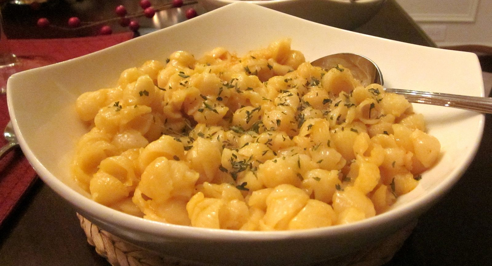

Mac and Cheese

Description
This crockpot mac and cheese is creamy, comforting, and takes just moments to assemble in a slow cooker. Great for large family gatherings and to take to potluck dinners. It's always a big hit!
Ingredients
- 1 (16 ounce) package elbow macaroni
- ½ cup butter
- salt and ground black pepper to taste
- 1 (16 ounce) package shredded Cheddar cheese, divided
- 1 (5 ounce) can evaporated milk
- 2 large eggs, well beaten
- 2 cups whole milk
- 1 (10.5 ounce) can condensed Cheddar cheese soup (such as Campbell's)
- 1 pinch paprika, or as desired (Optional)
Useful Links
Go back to Home Page.
Open another Recipes: